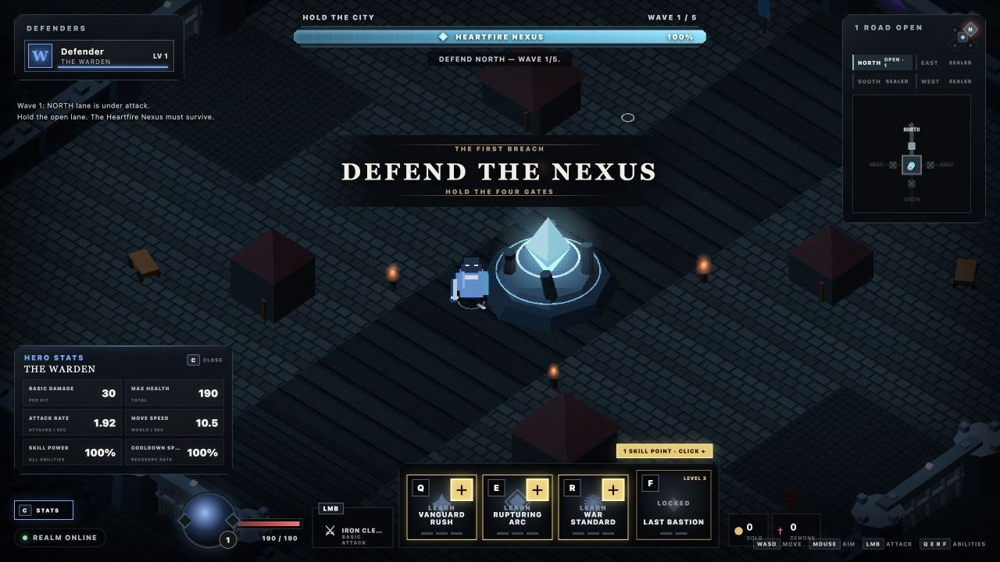

Hold the city
The Heartfire Nexus is always the objective. Gates may fall; the run ends only when the city loses its heart.
SIEGEHEART DEVELOPMENT COMPANION
A 1–4 player dark-fantasy action RPG about defending the Heartfire Nexus, surviving the breach, and carrying the fight back through the invasion rift.
LATEST VERIFIED CHECKPOINT · 0.1.6
Hero power is now readable from one authoritative stats model, and enemy gold rewards every connected defender fairly before the first shop enters the Citadel.

The Heartfire Nexus is always the objective. Gates may fall; the run ends only when the city loses its heart.
Warden, Riftstalker, Ashcaller, and Gravebinder share one control grammar while changing how every horde is solved.
Survive the breach, stabilize the Nexus, then push together through the north road and destroy the Rift Heart.